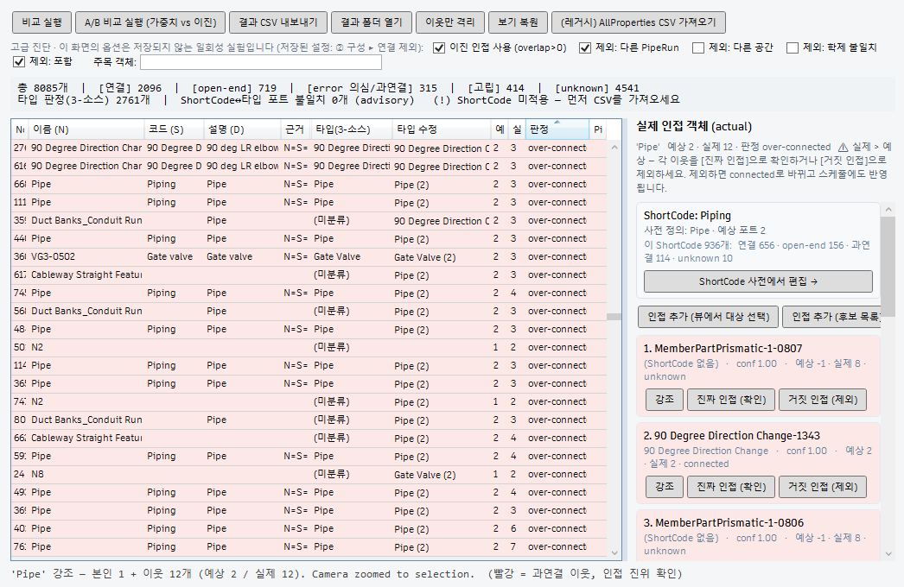
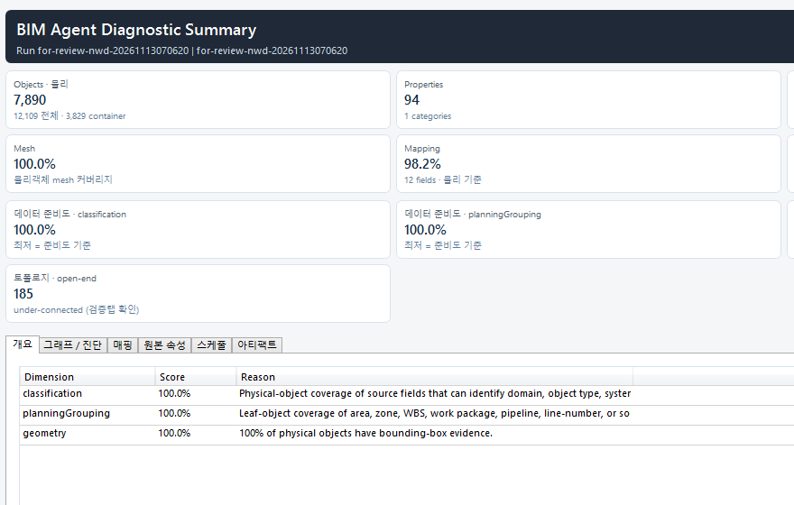
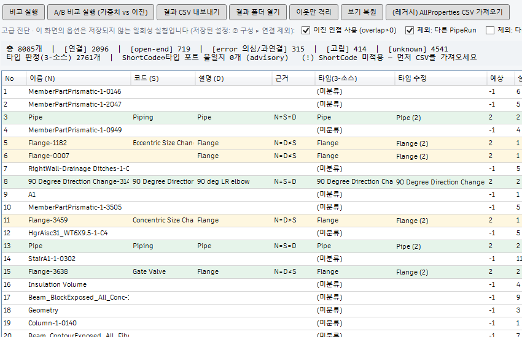
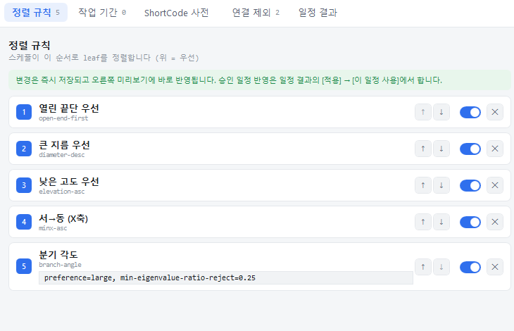
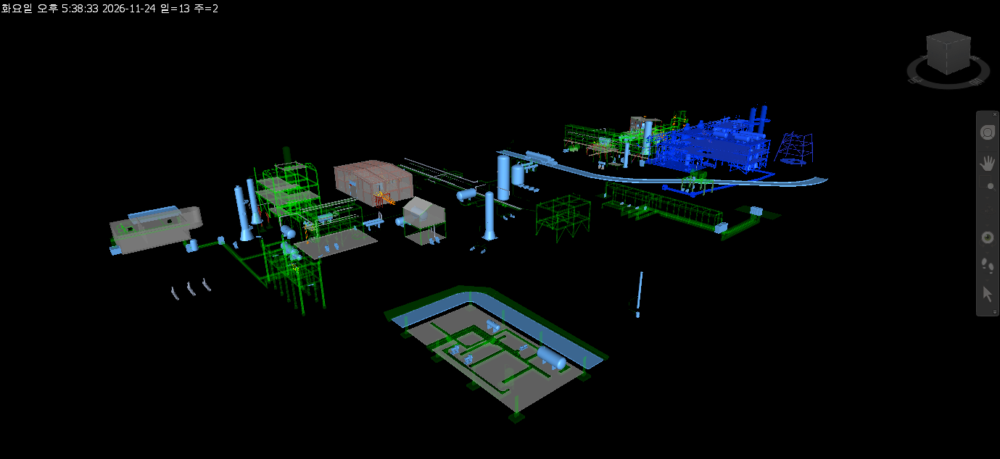
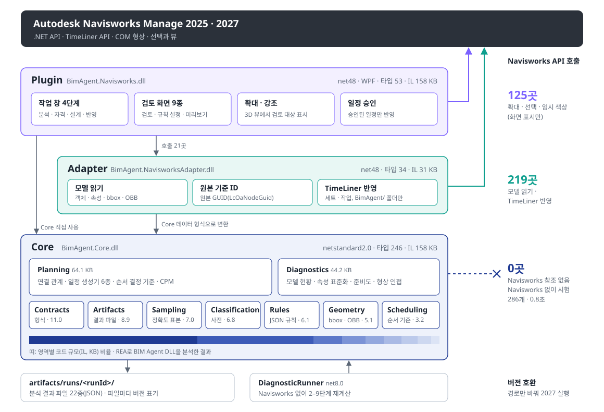
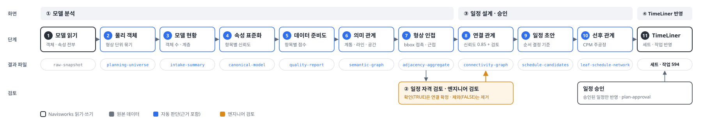
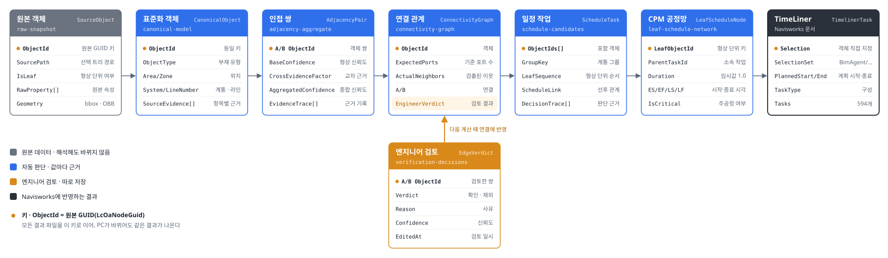
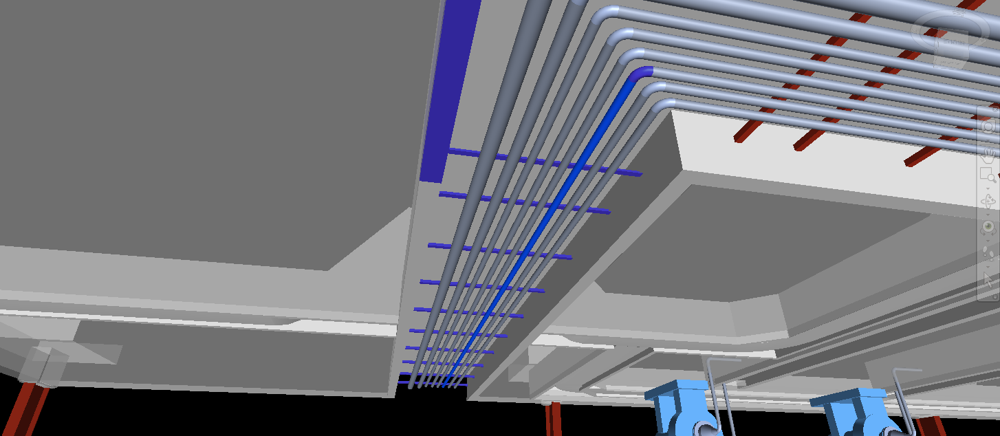

검토 · 예상보다 연결이 많은 배관(기준 포트 2 · 검출된 이웃 12)의 이웃을 확인 · 제외로 검토
Navisworks 애드인 · 모델 진단 → 부재 연결 관계 → 시공 순서 → TimeLiner 반영
Navisworks 플랜트 모델을 진단하고, 부재끼리의 연결 관계로 시공 순서를 짜서 TimeLiner 4D로 반영하는 애드인




3층 구조: 화면(Plugin) → 변환(Adapter) → 엔진(Core)

11단계 파이프라인과 결과 파일, 그 안의 데이터 구조


SourceEvidence · EvidenceTrace · DecisionTrace검토 → 3D 확인 → 순서 결정 기준 → TimeLiner 4D

